if (!require(pacman)) install.packages("pacman")p_load(tidyverse)Base R vs. ggplot2, the grammar of graphics, scatter/line/bar/pie plots, boxplots/histograms/density, color scales, groups, and faceting
Same as every session: bootstrap pacman, then load the tidyverse.
if (!require(pacman)) install.packages("pacman")p_load(tidyverse)German federal election polling trend (ZEIT ONLINE), one row per poll x party. Already fetched and reshaped to polls.csv, checked into this folder, so you can work offline.
# this is how it was fetched and reshaped:
# p_load(jsonlite)
# fromJSON("https://interactive.zeit.de/g/cronjobs/wahltrend-2025/bund/polls.json") |>
# as_tibble() |>
# pivot_longer(CDUCSU:BSW, names_to = "party", values_to = "share") |>
# write_csv("d02/polls.csv")
# (Day 3 picks this reshaping step up properly, starting from the wide file.)
polls <- read_csv("d02/polls.csv")polls |> head(100)# A tibble: 100 × 7
Poll_ID Pollster Date n Period party share
<chr> <chr> <date> <dbl> <chr> <chr> <dbl>
1 BT02170104O Forsa 2017-01-04 2001 27.12.–30.12. CDUCSU 37
2 BT02170104O Forsa 2017-01-04 2001 27.12.–30.12. SPD 21
3 BT02170104O Forsa 2017-01-04 2001 27.12.–30.12. Gruene 10
4 BT02170104O Forsa 2017-01-04 2001 27.12.–30.12. FDP 6
5 BT02170104O Forsa 2017-01-04 2001 27.12.–30.12. Linke 9
6 BT02170104O Forsa 2017-01-04 2001 27.12.–30.12. AfD 12
7 BT02170104O Forsa 2017-01-04 2001 27.12.–30.12. BSW NA
8 BT01170105P Infratest dimap 2017-01-05 1505 02.01.–04.01. CDUCSU 37
9 BT01170105P Infratest dimap 2017-01-05 1505 02.01.–04.01. SPD 20
10 BT01170105P Infratest dimap 2017-01-05 1505 02.01.–04.01. Gruene 9
# ℹ 90 more rowsTwo of the most common plots, quickly, before we move on to ggplot2.
afd <- polls |>
filter(party == "AfD") |>
filter(Date >= as.Date("2025-01-01"))
afd# A tibble: 378 × 7
Poll_ID Pollster Date n Period party share
<chr> <chr> <date> <dbl> <chr> <chr> <dbl>
1 BT04250103X GMS 2025-01-03 1010 27.12.–02.0… AfD 18
2 BT05250104V INSA 2025-01-04 1201 30.12.–03.0… AfD 20
3 BT05250106W INSA 2025-01-06 2001 03.01.–06.0… AfD 21.5
4 BT02250107K Forsa 2025-01-07 1501 02.01.–06.0… AfD 19
5 BT13250108Y YouGov 2025-01-08 1908 03.01.–06.0… AfD 21
6 BT01250109P Infratest dimap 2025-01-09 1323 06.01.–08.0… AfD 20
7 BT06250110D Forschungsgruppe Wahlen 2025-01-10 1433 07.01.–09.0… AfD 21
8 BT05250111X INSA 2025-01-11 1205 06.01.–10.0… AfD 22
9 BT05250113Y INSA 2025-01-13 2005 10.01.–13.0… AfD 22
10 BT02250114L Forsa 2025-01-14 2504 07.01.–13.0… AfD 20
# ℹ 368 more rowsplot(afd$Date, afd$share)
lines(afd$Date, afd$share)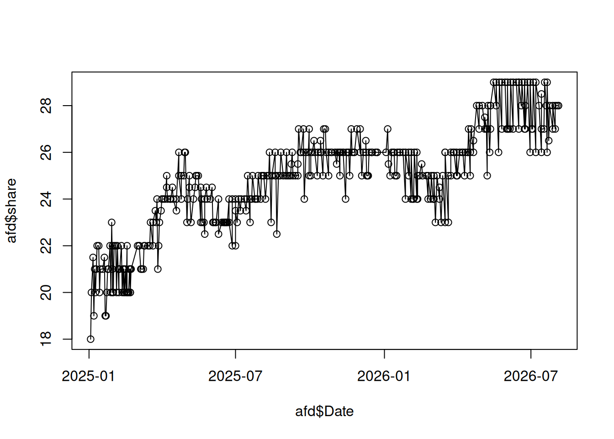
hist(afd$share)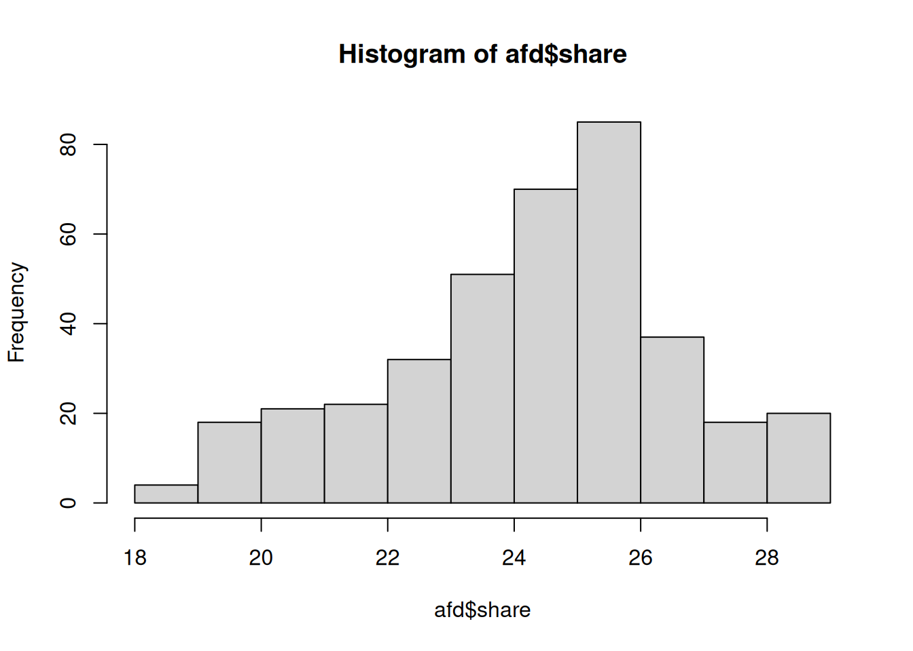
Every plot() call starts from a blank canvas — no axis labels worth reading by default, no legend, no way to color by group without writing it by hand. ggplot2 builds a plot in layers instead, so from here on we use it exclusively.
Every ggplot starts from a blank canvas, built up step by step with +.
ggplot(polls)
ggplot(afd, aes(x = Date, y = share))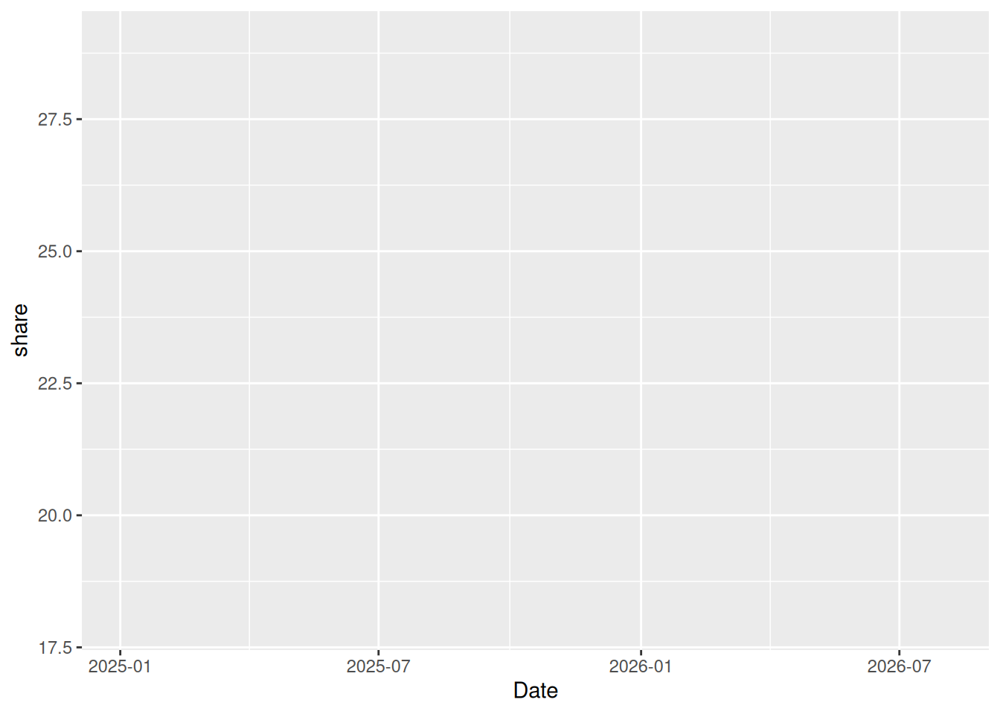
afd |>
ggplot(aes(x = Date, y = share)) +
geom_point()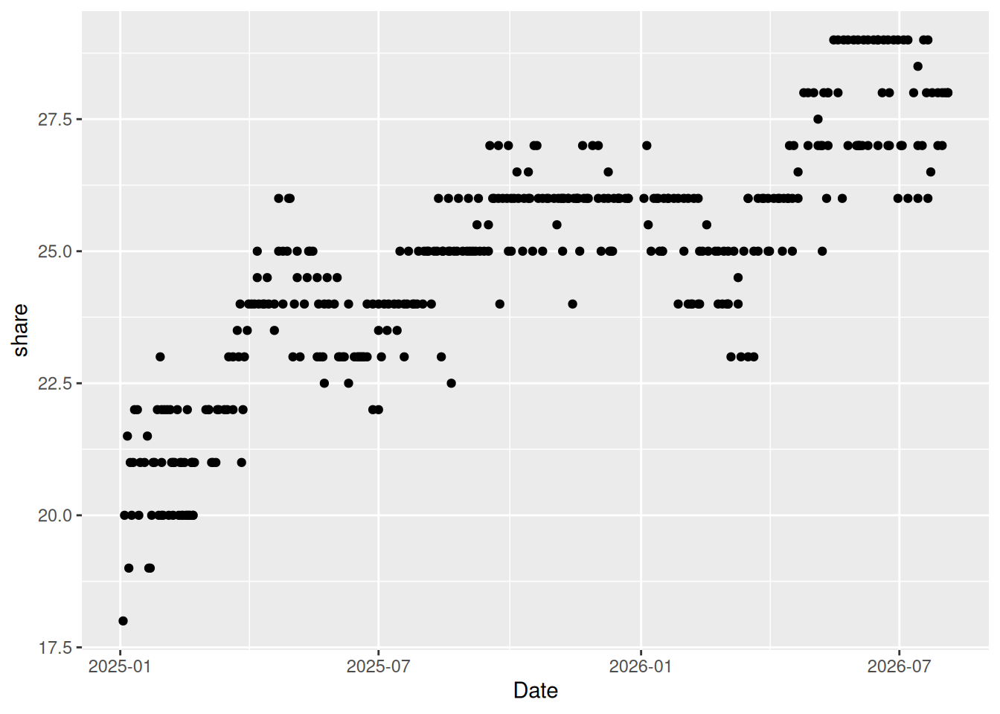
One point per poll, colored by pollster.
afd |>
ggplot(aes(x = Date, y = share, color = Pollster)) +
geom_point(alpha = 0.6)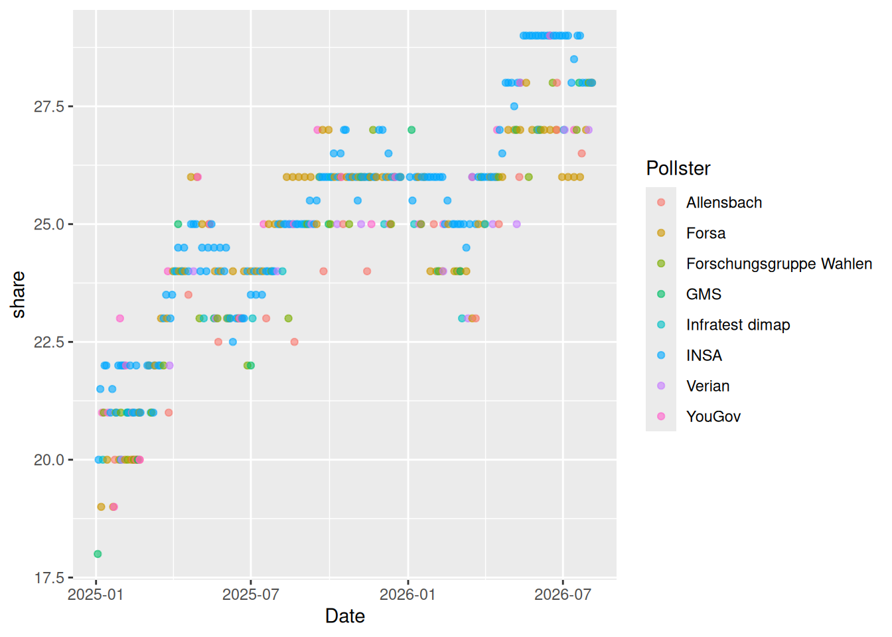
Add labels, change axis breaks, and set limits.
afd |>
ggplot(aes(x = Date, y = share, color = Pollster)) +
geom_point(alpha = 0.6) +
scale_y_continuous(
breaks = seq(15, 30, by = 5),
labels = c("15%", "20%", "25%", "30%"),
limits = c(15, 30)
)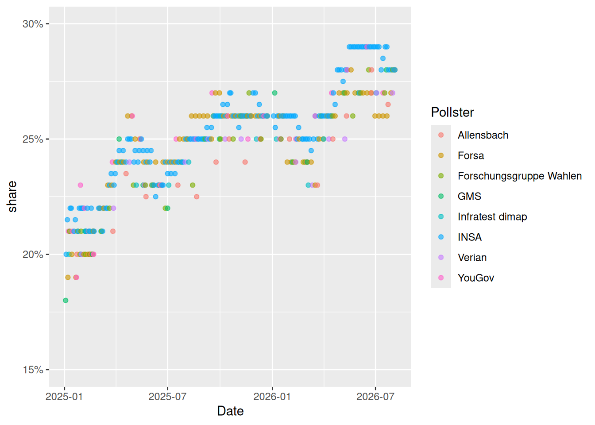
A handy shortcut: format the y-axis as percent directly (share needs dividing by 100 first).
p_load(scales)
afd |>
mutate(share = share / 100) |>
ggplot(aes(x = Date, y = share, color = Pollster)) +
geom_point(alpha = 0.6) +
scale_y_continuous(breaks = breaks_width(.05), labels = label_percent())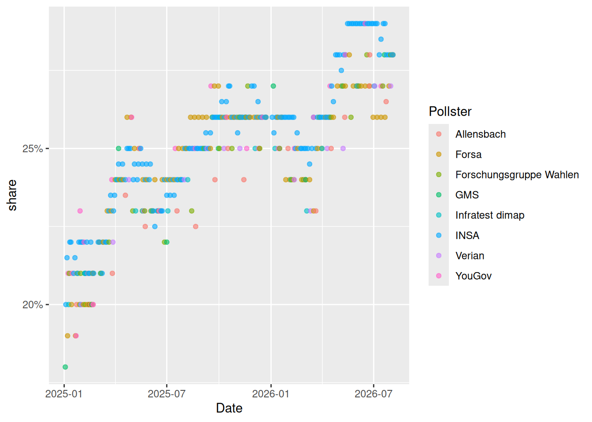
Connecting raw polls in order is noisy with this much day-to-day variation — we reduce the plotted timeframe by filtering first.
afd |>
filter(between(Date, as.Date("2026-01-01"), Sys.Date())) |>
ggplot(aes(x = Date, y = share)) +
geom_line()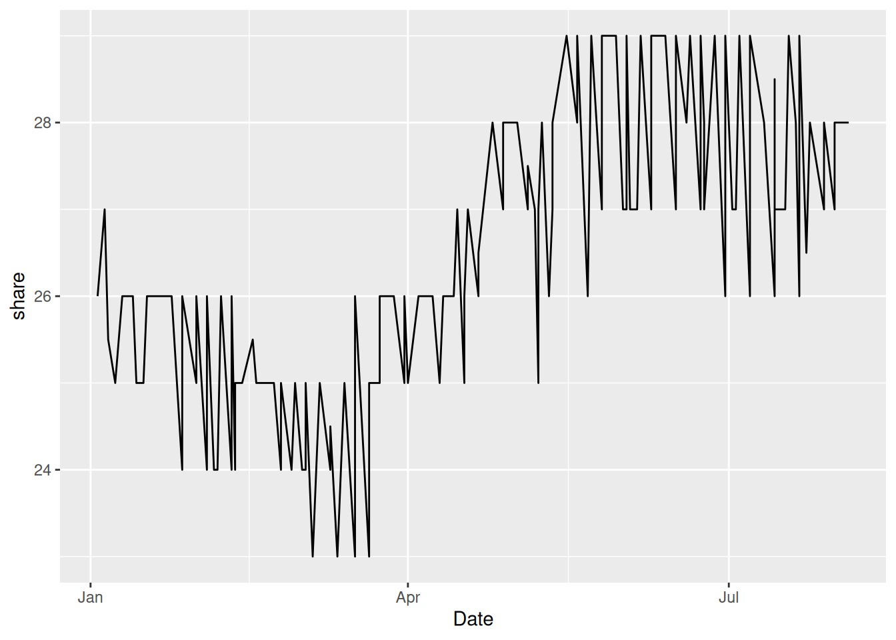
A line plot makes more sense per pollster.
afd |>
filter(between(Date, as.Date("2026-01-01"), Sys.Date())) |>
ggplot(aes(x = Date, y = share, color = Pollster)) +
geom_line()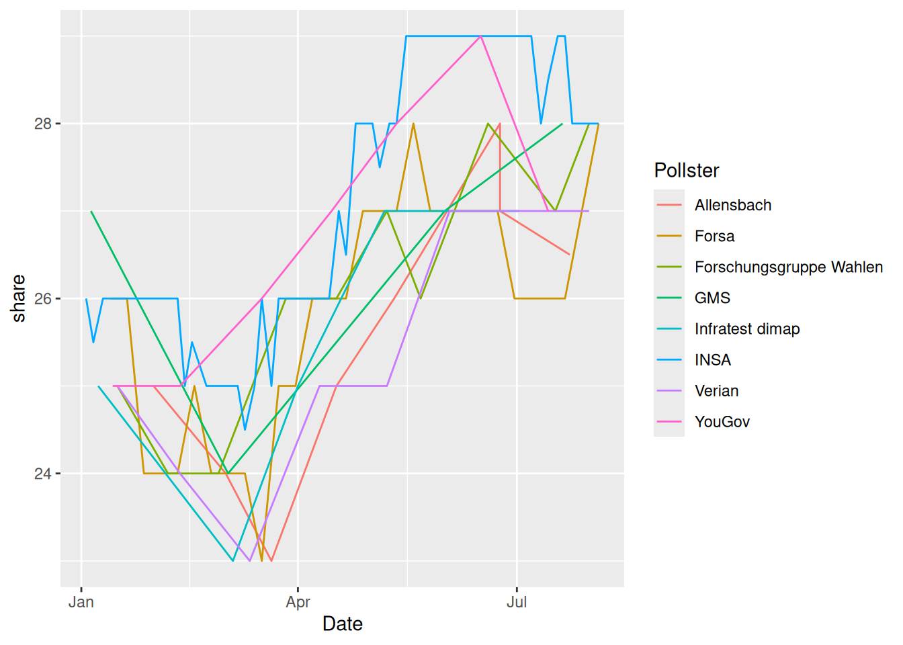
A smoothed trend line reads much better — roughly what a “polling average” tracker shows (their exact weighting scheme is more involved than this).
afd |>
ggplot(aes(x = Date, y = share)) +
geom_point(alpha = 0.3) +
geom_smooth(span = 0.2, se = FALSE)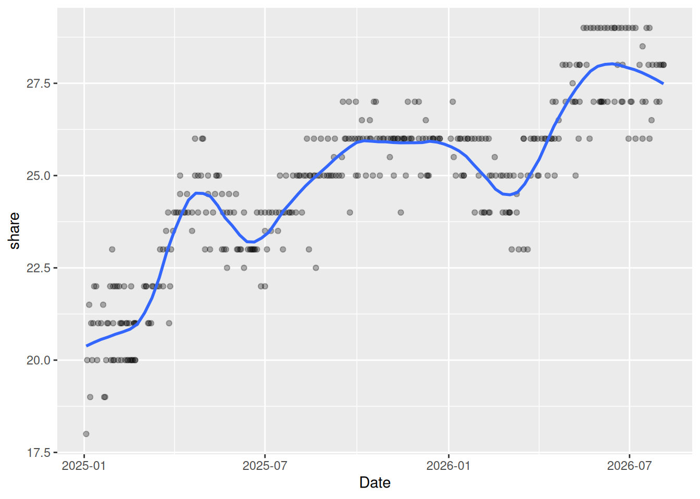
Spread of a party’s polled share per pollster — “house effects”.
afd |>
ggplot(aes(x = Pollster, y = share)) +
geom_boxplot()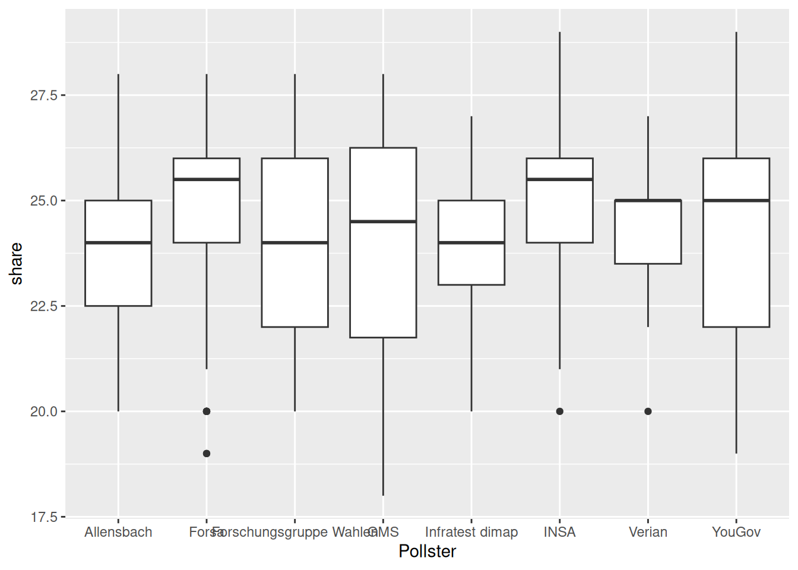
afd |>
ggplot(aes(x = share)) +
geom_histogram(binwidth = 1)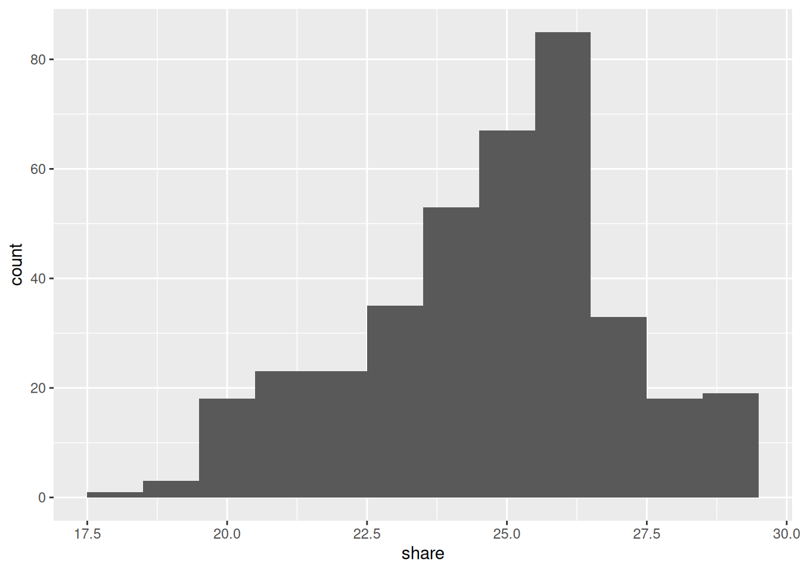
A smoothed version of the same distribution.
afd |>
ggplot(aes(x = share)) +
geom_density()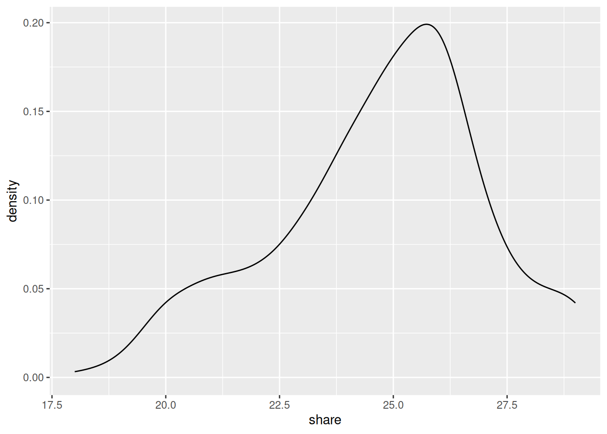
Real party colors instead of ggplot’s defaults.
party_colors <- c(
CDUCSU = "#000000",
SPD = "#E3000F",
Gruene = "#46962b",
FDP = "#ffed00",
Linke = "#be3075",
AfD = "#009ee0",
BSW = "#7d3f98"
)
party_colors CDUCSU SPD Gruene FDP Linke AfD BSW
"#000000" "#E3000F" "#46962b" "#ffed00" "#be3075" "#009ee0" "#7d3f98" polls |>
ggplot(aes(x = Date, y = share, color = party)) +
geom_smooth(se = FALSE) +
scale_color_manual(values = party_colors) +
labs(title = "Bundestag polling trend", x = NULL, y = "Share (%)", color = "Party")Warning: Removed 1548 rows containing non-finite outside the scale range
(`stat_smooth()`).

ggsave() saves the last plot drawn, or a specific one via plot = .... width/height set the physical size, dpi the pixel density — dpi only matters for raster formats like PNG, a PDF is a vector graphic with no fixed resolution.
trend_plot <- polls |>
ggplot(aes(x = Date, y = share, color = party)) +
geom_smooth(se = FALSE) +
scale_color_manual(values = party_colors) +
labs(title = "Bundestag polling trend", x = NULL, y = "Share (%)", color = "Party")
ggsave("afd_trend.png", plot = trend_plot, width = 7, height = 5, dpi = 300)
ggsave("afd_trend.pdf", plot = trend_plot, width = 7, height = 5)One bar per party, from the most recent Forsa poll.
latest_forsa <- polls |>
filter(Pollster == "Forsa", Date == max(Date))
latest_forsa# A tibble: 7 × 7
Poll_ID Pollster Date n Period party share
<chr> <chr> <date> <dbl> <chr> <chr> <dbl>
1 BT02260804Q Forsa 2026-08-04 2501 28.07.–03.08. CDUCSU 21
2 BT02260804Q Forsa 2026-08-04 2501 28.07.–03.08. SPD 12
3 BT02260804Q Forsa 2026-08-04 2501 28.07.–03.08. Gruene 16
4 BT02260804Q Forsa 2026-08-04 2501 28.07.–03.08. FDP 4
5 BT02260804Q Forsa 2026-08-04 2501 28.07.–03.08. Linke 12
6 BT02260804Q Forsa 2026-08-04 2501 28.07.–03.08. AfD 28
7 BT02260804Q Forsa 2026-08-04 2501 28.07.–03.08. BSW NAlatest_forsa |>
ggplot(aes(x = party, y = share, fill = party)) +
scale_fill_manual(values = party_colors) +
geom_col()Warning: Removed 1 row containing missing values or values outside the scale range
(`geom_col()`).
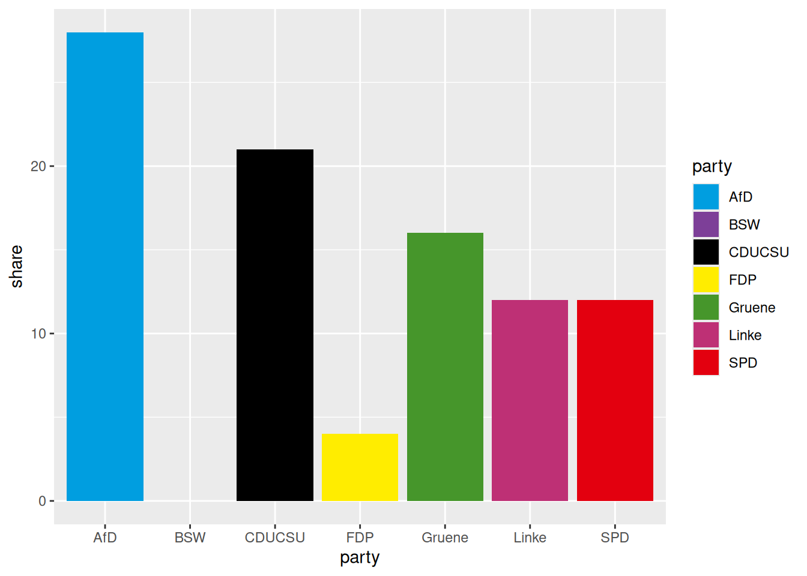
ggplot2 has no dedicated pie geom — it is a bar chart bent into a circle.
latest_forsa |>
ggplot(aes(x = "", y = share, fill = party)) +
geom_col() +
coord_polar("y") +
scale_fill_manual(values = party_colors)Warning: Removed 1 row containing missing values or values outside the scale range
(`geom_col()`).
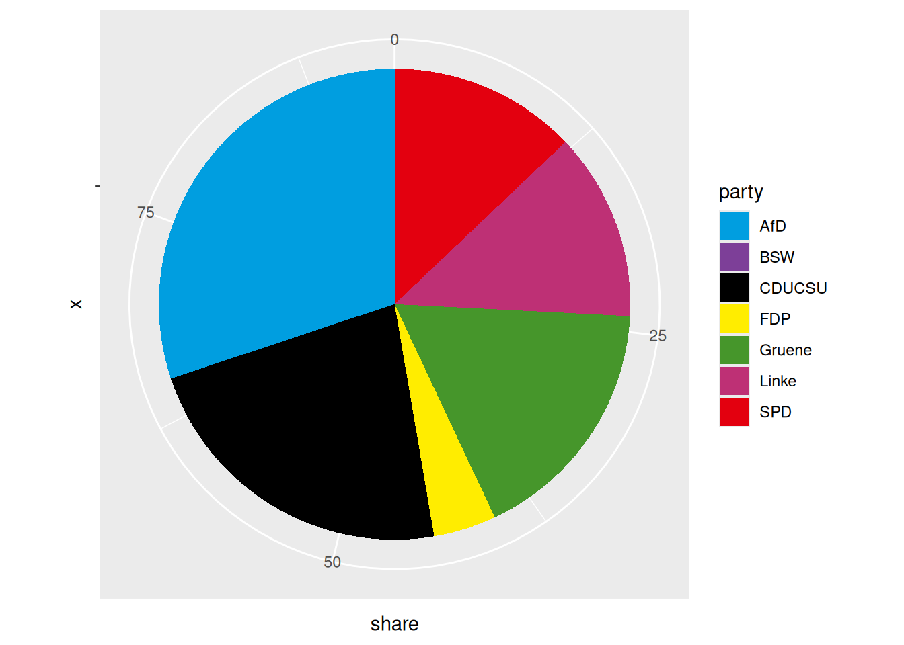
Angles are harder to compare at a glance than bar height — the bar chart above communicates the same numbers more clearly.
A second mapped variable (color, fill, or group) clusters bars side by side automatically.
polls |>
filter(Date == max(Date)) |>
ggplot(aes(x = party, y = share, fill = Pollster)) +
geom_col(position = "dodge")Warning: Removed 1 row containing missing values or values outside the scale range
(`geom_col()`).
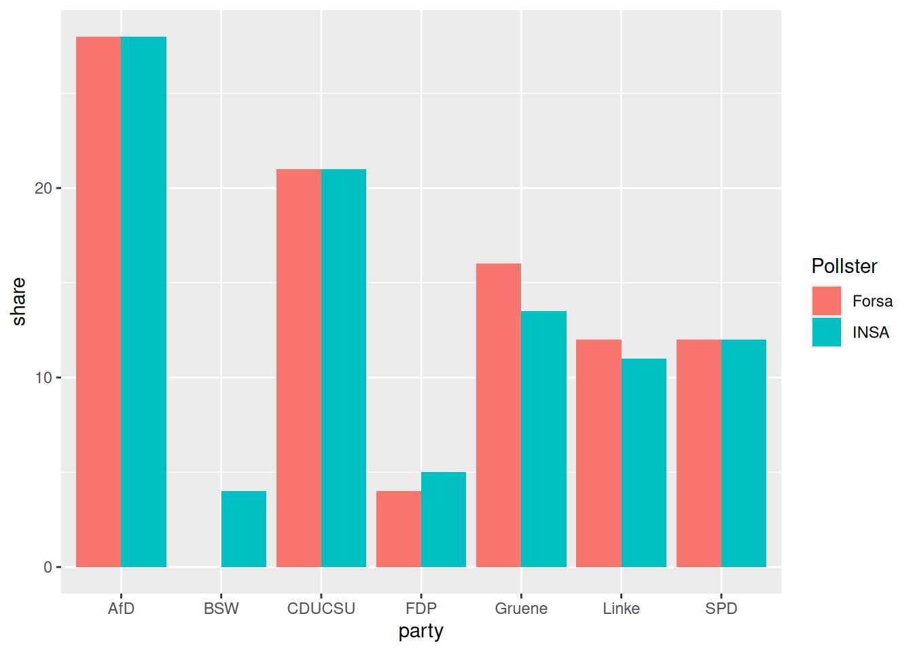
color only outlines the bars — for geom_col() you almost always want fill.
polls |>
filter(Date == max(Date)) |>
ggplot(aes(x = party, y = share, color = Pollster)) +
geom_col(position = "dodge")Warning: Removed 1 row containing missing values or values outside the scale range
(`geom_col()`).
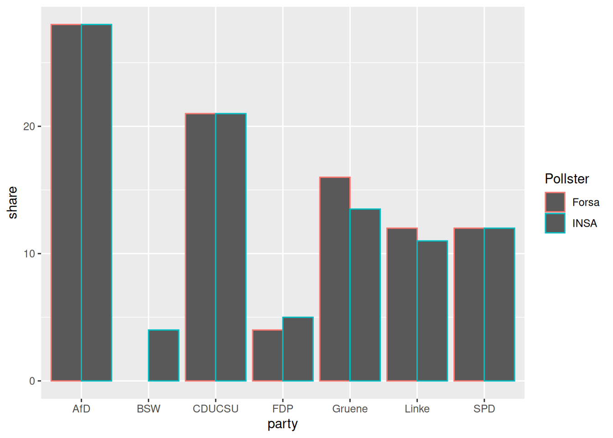
group alone still dodges the bars into position, just without any visual distinction between them.
polls |>
filter(Date == max(Date)) |>
ggplot(aes(x = party, y = share, group = Pollster)) +
geom_col(position = "dodge")Warning: Removed 1 row containing missing values or values outside the scale range
(`geom_col()`).
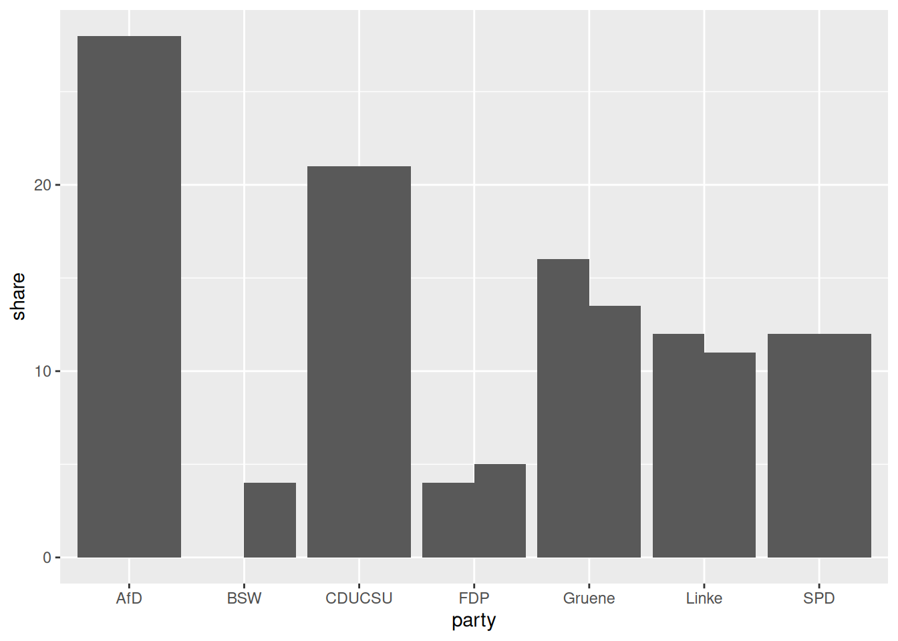
Color/fill and group don’t have to match — group decides which points geom_line() connects, independently of what color encodes.
polls |>
filter(between(Date, as.Date("2026-01-01"), Sys.Date())) |>
ggplot(aes(x = Date, y = share, color = party, group = paste(Pollster, party))) +
geom_point(alpha = 0.4) +
geom_line(alpha = 0.4) +
scale_color_manual(values = party_colors) +
labs(title = "Same color, grouped by pollster x party", x = NULL, y = "Share (%)", color = "Party")Warning: Removed 39 rows containing missing values or values outside the scale range
(`geom_point()`).
Warning: Removed 28 rows containing missing values or values outside the scale range
(`geom_line()`).
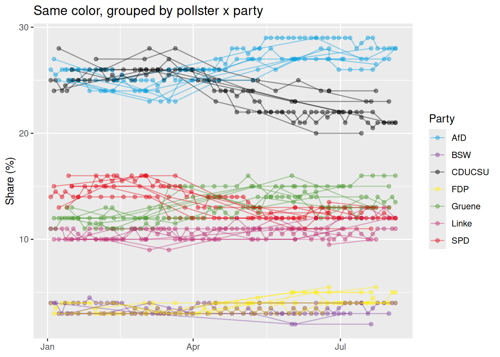
One small panel per pollster instead of one crowded plot.
afd |>
ggplot(aes(x = Date, y = share)) +
geom_point(alpha = 0.4) +
geom_smooth(span = .4, se = FALSE) +
facet_wrap(~Pollster)Warning in simpleLoess(y, x, w, span, degree = degree, parametric = parametric,
: pseudoinverse used at 20138
Warning in simpleLoess(y, x, w, span, degree = degree, parametric = parametric,
: neighborhood radius 47
Warning in simpleLoess(y, x, w, span, degree = degree, parametric = parametric,
: reciprocal condition number 0
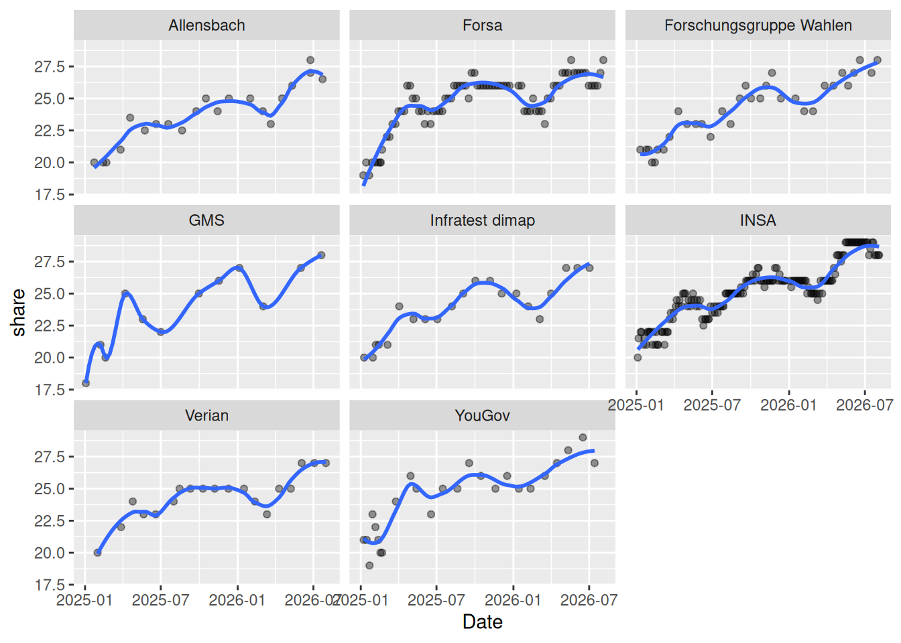
Facet by party instead — scales = "free_y" lets each panel use its own y-axis range, since parties poll at very different levels.
polls |>
filter(Pollster == "Forsa") |>
ggplot(aes(x = Date, y = share, color = party)) +
geom_point(alpha = 0.05) +
geom_smooth(span = .4, se = FALSE) +
scale_color_manual(values = party_colors) +
facet_wrap(~party, scales = "free_y")Warning: Removed 397 rows containing non-finite outside the scale range
(`stat_smooth()`).
Warning: Removed 397 rows containing missing values or values outside the scale range
(`geom_point()`).
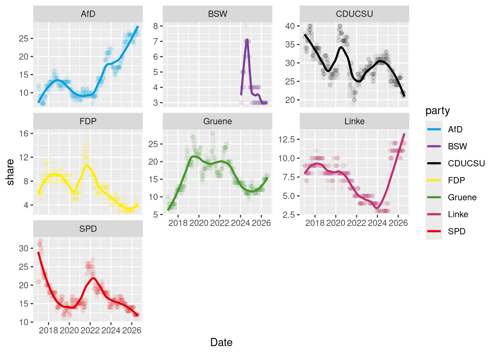
Your task: combine color scales, faceting, and labels into one plot — a trend line per party, real party colors, one panel per pollster.
Warning: Removed 1548 rows containing non-finite outside the scale range
(`stat_smooth()`).
Warning: Removed 1548 rows containing missing values or values outside the scale range
(`geom_point()`).
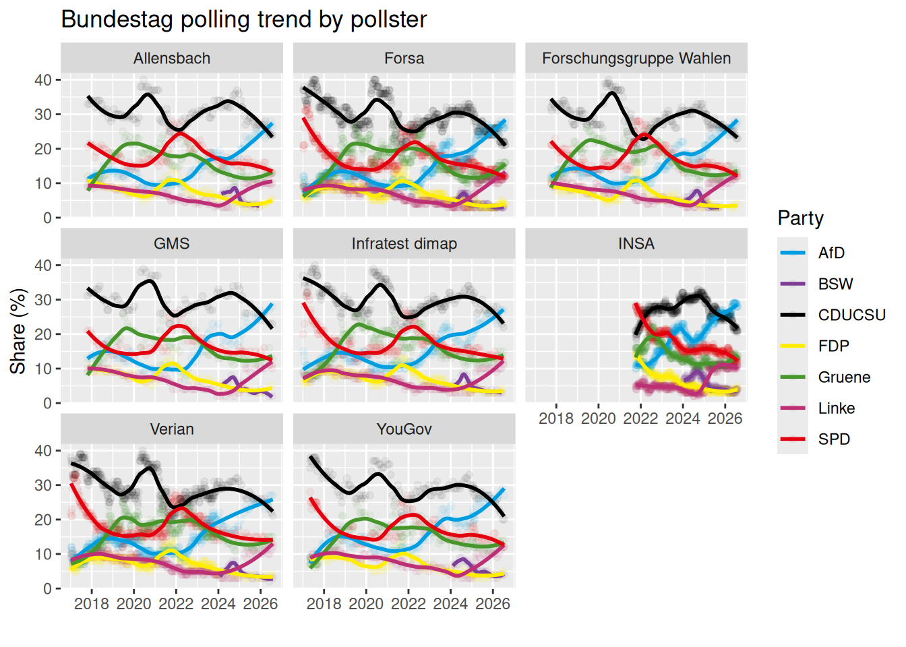
Your task: show how each party’s Forsa-polled support has shifted between its very first poll and the most recent one. No new geom needed — think about what a plot connecting just two points per party would look like.
# A tibble: 14 × 7
Poll_ID Pollster Date n Period party share
<chr> <chr> <date> <dbl> <chr> <chr> <dbl>
1 BT02170104O Forsa 2017-01-04 2001 27.12.–30.12. CDUCSU 37
2 BT02170104O Forsa 2017-01-04 2001 27.12.–30.12. SPD 21
3 BT02170104O Forsa 2017-01-04 2001 27.12.–30.12. Gruene 10
4 BT02170104O Forsa 2017-01-04 2001 27.12.–30.12. FDP 6
5 BT02170104O Forsa 2017-01-04 2001 27.12.–30.12. Linke 9
6 BT02170104O Forsa 2017-01-04 2001 27.12.–30.12. AfD 12
7 BT02170104O Forsa 2017-01-04 2001 27.12.–30.12. BSW NA
8 BT02260804Q Forsa 2026-08-04 2501 28.07.–03.08. CDUCSU 21
9 BT02260804Q Forsa 2026-08-04 2501 28.07.–03.08. SPD 12
10 BT02260804Q Forsa 2026-08-04 2501 28.07.–03.08. Gruene 16
11 BT02260804Q Forsa 2026-08-04 2501 28.07.–03.08. FDP 4
12 BT02260804Q Forsa 2026-08-04 2501 28.07.–03.08. Linke 12
13 BT02260804Q Forsa 2026-08-04 2501 28.07.–03.08. AfD 28
14 BT02260804Q Forsa 2026-08-04 2501 28.07.–03.08. BSW NAWarning: Removed 2 rows containing missing values or values outside the scale range
(`geom_line()`).
Warning: Removed 2 rows containing missing values or values outside the scale range
(`geom_point()`).
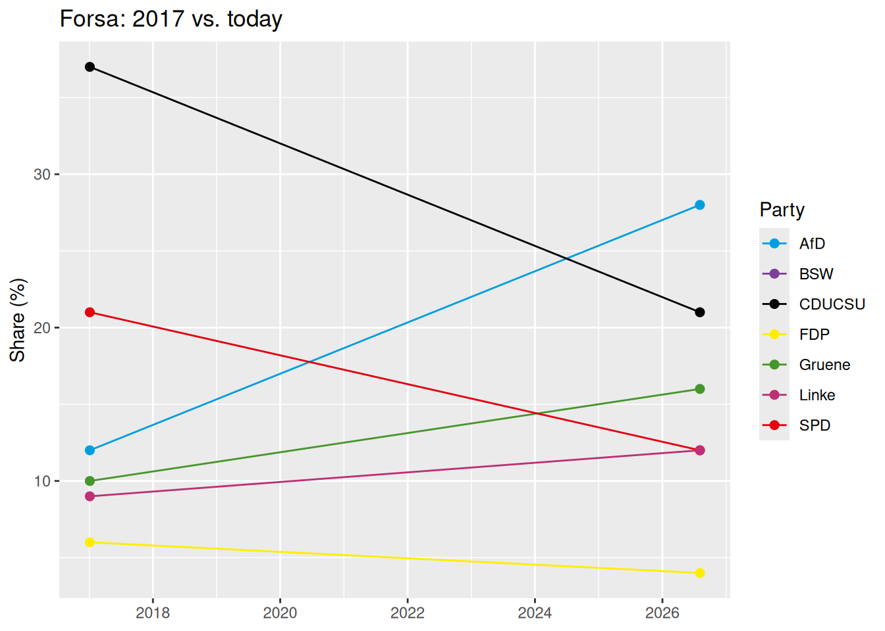
Your task: plot BSW’s Forsa-polled trend over time and show whether — and when — it crosses the 5% electoral threshold. A reference line at 5% helps make the answer visible at a glance.
# A tibble: 121 × 7
Poll_ID Pollster Date n Period party share
<chr> <chr> <date> <dbl> <chr> <chr> <dbl>
1 BT02240123K Forsa 2024-01-23 2503 16.01.–22.01. BSW 3
2 BT02240130L Forsa 2024-01-30 2506 23.01.–29.01. BSW 3
3 BT02240206M Forsa 2024-02-06 2503 30.01.–04.02. BSW 5
4 BT02240213N Forsa 2024-02-13 2502 06.02.–12.02. BSW 5
5 BT02240220O Forsa 2024-02-20 2504 13.02.–19.02. BSW 4
6 BT02240227P Forsa 2024-02-27 2503 20.02.–26.02. BSW 4
7 BT02240305Q Forsa 2024-03-05 2506 27.02.–04.03. BSW 4
8 BT02240312R Forsa 2024-03-12 2502 05.03.–11.03. BSW 5
9 BT02240319S Forsa 2024-03-19 2500 12.03.–18.03. BSW 5
10 BT02240326T Forsa 2024-03-26 2503 19.03.–25.03. BSW 5
# ℹ 111 more rows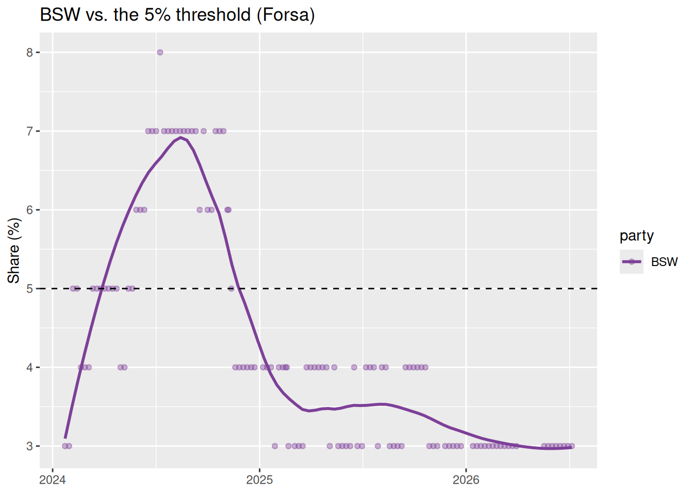